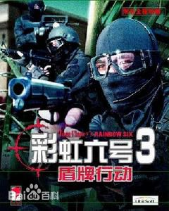

盾牌行动
发行公司：UBI
开发公司：Red Storm Entertainment游戏类型：FPS
发布日期：2001年10月
对应平台： PC
《彩虹六号》是一个相当成功的游戏系列，自成一派，成为严肃的战略团队
游戏流派的楷模。不过让人惊讶的是，自从1999年以来，该系列一直没有推出新作，下个月即将问世的《彩虹六号：盾牌行动》是三年来它的第一部新游戏。
虽然，几年来《彩虹六号》和《流浪之矛》推出了许多部任务版游戏，Red Storm也一直在积极地制作《幽灵侦察车》——将《彩虹六号》的游戏模式与逼真的户外背景结合在一起。无论如何，充分宽裕的开发时间确实让《盾牌行动》受益不少，与以前的游戏相比，无论是图像水平，还是逼真程度，新游戏都有了明显提高。
这个游戏系列的灵感最初来源于汤姆·克兰斯的小说《彩虹六号》，就象前几部游戏一样，在《盾牌行动》中，玩家仍然扮演跨国特种部队中的一名精英分子，负责解决各种领域的犯罪事件。游戏的开头看似平淡，一群恐怖分子占领了委内瑞拉的一座精炼厂，另一群恐怖分子则潜入了瑞士境内，绑架了国际货币基金组织的几名官员，作为人质。随着15个单人游戏关卡一一展开，你将会发生这些恐怖事件只是烟雾弹，还有一桩惊天阴谋隐藏在背后。
